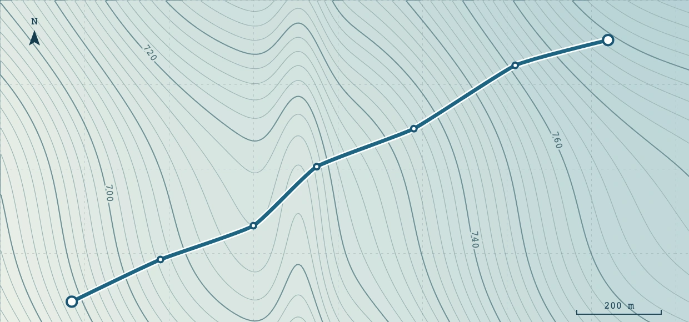

Load a terrain surface
Import a georeferenced elevation file and check its name, cell size and coordinate system.
Learn the Guided mode with illustrated guides and hands-on lessons for the Hillside access training project.
Featured workflow
Trace a new alignment on the hillside, finish the sketch and find the road you just created.

Import a georeferenced elevation file and check its name, cell size and coordinate system.
Use an existing GeoJSON line as an editable alignment on the training terrain.
Follow one point from the plan through the profile to its cross-section.
Raise the first vertical alignment point and verify the new formation level.
Adjust the left half-width and check the two sides of the road independently.
Use the same baseline to compare road length, maximum grade and earthworks.
Find the cut and fill volumes and see how the base engineering estimate is itemized.
Turn a detected intersection into a crossing record for planning and pricing.
Read the outstanding checks and follow one directly to its design settings.
Keep an editable road project file and reopen it in the workbench.
Download a CSV of stations, coordinates, elevations and design values.